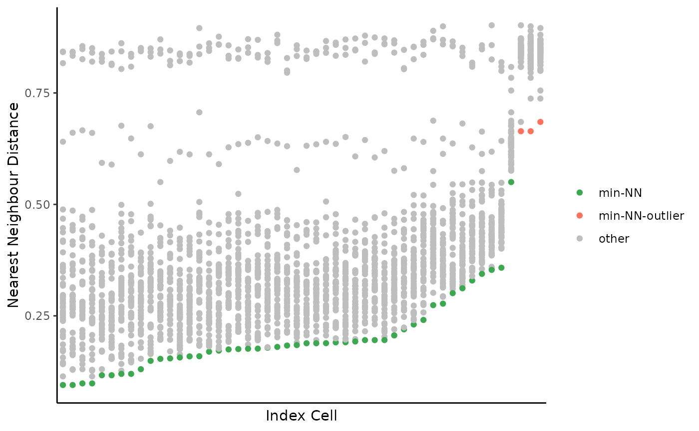

Pairwise Differences Cetween Cells
pairwise-differences.RmdThe functions here were inspired by a paper called: Genomic evolution and cellular states of whole-genome doubling in ovarian cancer. By Weiner et al. 2025, some folks at MSKCC.
The basic idea across all of them is just to count the numbers of bins that are different in state between two cells, divided by the number of bins considered. Then we can do things like fit a beta distribution to identify outliers, or do other clustering to find groups of similar/different cells, etc.
These functions will make that a bit easier.
First some toy data:
reads_df <- vroom::vroom("data/example_reads.tsv.gz")
#> Rows: 620600 Columns: 11
#> ── Column specification ────────────────────────────────────────────────────────
#> Delimiter: "\t"
#> chr (2): cell_id, chr
#> dbl (6): start, end, state, gc, map, reads
#> lgl (3): ideal, valid, is_low_mappability
#>
#> ℹ Use `spec()` to retrieve the full column specification for this data.
#> ℹ Specify the column types or set `show_col_types = FALSE` to quiet this message.
# only using a few cells to demonstrate functions below
targ_cells <- unique(reads_df$cell_id)[1:50]
reads_df <- dplyr::filter(reads_df, cell_id %in% targ_cells)
# standard reads dataframe of bin based state calls
dplyr::slice_head(reads_df, n = 5)
#> # A tibble: 5 × 11
#> cell_id chr start end state gc ideal map reads valid
#> <chr> <chr> <dbl> <dbl> <dbl> <dbl> <lgl> <dbl> <dbl> <lgl>
#> 1 AT23998-A138956A-R03-… 1 1 e0 5 e5 4 -1 FALSE 0.349 55 FALSE
#> 2 AT23998-A138956A-R03-… 1 5.00e5 1 e6 4 -1 FALSE 0.770 224 FALSE
#> 3 AT23998-A138956A-R03-… 1 1.00e6 1.5e6 4 0.598 FALSE 0.982 342 TRUE
#> 4 AT23998-A138956A-R03-… 1 1.50e6 2 e6 4 0.539 TRUE 0.963 282 TRUE
#> 5 AT23998-A138956A-R03-… 1 2.00e6 2.5e6 4 0.595 TRUE 0.997 385 TRUE
#> # ℹ 1 more variable: is_low_mappability <lgl>First, we can measure pairwise distances between all cells. Warning, this function is slow, and the number of pairwise comparisons grows with more cells. E.g., 100 cells is 4950 comparisons and takes a couple minutes. There is definitely room for improvement here.
Parallelizing will make your life a bit better. Internally, this
function uses furrr, you just need to set up a plan.
# first set up a parallel plan, here with 4 cores being used
future::plan(future::multicore, workers = 4)
pairwise_diffs <- dlptools::pairwise_bin_difference(reads_df)
#> [1] "comparing all cells. Gonna take some time."
#> [1] "processing: 1225 pairs"
dplyr::slice_head(pairwise_diffs, n = 5)
#> # A tibble: 5 × 6
#> n_diff tot_bins prop_diff index_cell comp_cell nearest_neighbour
#> <int> <int> <dbl> <chr> <chr> <lgl>
#> 1 2214 6144 0.360 AT23998-A138956A-R03-C34 AT23998-… FALSE
#> 2 2286 6135 0.373 AT23998-A138956A-R03-C34 AT23998-… FALSE
#> 3 2212 6151 0.360 AT23998-A138956A-R03-C34 AT23998-… FALSE
#> 4 1972 6141 0.321 AT23998-A138956A-R03-C34 AT23998-… FALSE
#> 5 2811 6151 0.457 AT23998-A138956A-R03-C34 AT23998-… FALSEwhich is each cell (index cell) compared to each other
cell (comp_cell) and some information on the proportion of
bins different (prop_diff).
The function dlptools::pairwise_bin_difference() has a
cells parameter. Leaving it empty, the default, compares
all cells in a pairwise manner.
This will compare this one cell against all others:
dlptools::pairwise_bin_difference(
reads_df,
cells = "some_cell_id"
)Alternatively, this will just compared these cells to themselves:
dlptools::pairwise_bin_difference(
reads_df,
cells = c("cell_id_one", "cell_id_two", "cell_id_three")
)The nearest neighbour of each cell is marked in the dataframe returned above. This function now takes that information, fits a beta distribution to those nearest neighbours, then returns outlier cells based on that distribution:
outlier_cells <- dlptools::find_outlier_cells(pairwise_diffs)
dplyr::slice_head(outlier_cells, n = 5)
#> # A tibble: 3 × 4
#> outlier_cell mean_diff_to_all_cells nn_dist nn_cell
#> <chr> <dbl> <dbl> <chr>
#> 1 AT23998-A138956A-R11-C39 0.839 0.664 AT23998-A138956A-R13-…
#> 2 AT23998-A138956A-R13-C52 0.834 0.664 AT23998-A138956A-R11-…
#> 3 AT23998-A138956A-R15-C39 0.837 0.685 AT23998-A138956A-R11-…There is a quick plot that can be made to visualize these distances:
dlptools::plot_nnd_outlier_cells(
pairwise_diffs, outlier_cells
)
There is also an option to return a pairwise matrix from the initial distance measurement:
dlptools::pairwise_bin_difference(
reads_df,
return_pairs_matrix = TRUE
)or best done afterwards so you don’t have to wait for the long calculation again:
pairs_mtx <- dlptools::convert_dists_to_pairwise(pairwise_diffs)
pairs_mtx[1:4, 1:4]
#> index_cell
#> comp_cell AT23998-A138956A-R03-C34 AT23998-A138956A-R04-C58
#> AT23998-A138956A-R03-C34 0.0000000 0.3603516
#> AT23998-A138956A-R04-C58 0.3603516 0.0000000
#> AT23998-A138956A-R05-C42 0.3726161 0.2864141
#> AT23998-A138956A-R05-C64 0.3596163 0.3495224
#> index_cell
#> comp_cell AT23998-A138956A-R05-C42 AT23998-A138956A-R05-C64
#> AT23998-A138956A-R03-C34 0.3726161 0.3596163
#> AT23998-A138956A-R04-C58 0.2864141 0.3495224
#> AT23998-A138956A-R05-C42 0.0000000 0.2165719
#> AT23998-A138956A-R05-C64 0.2165719 0.0000000A matrix like this can then be useful for other analyses, like if you wanted to do some clustering: